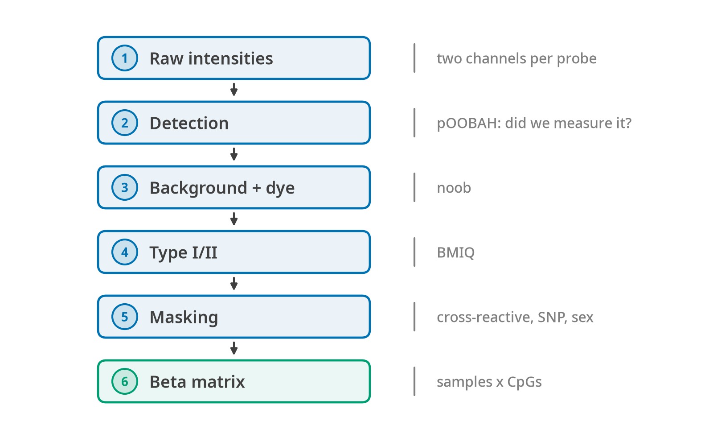
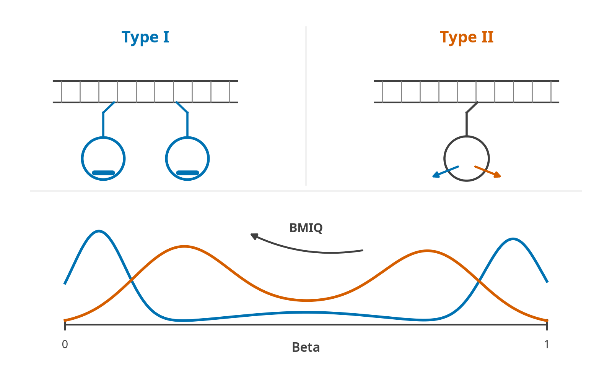

Raw arrays to betas
Raw IDATs
New in this release. Before this you had to normalise in sesame or minfi and bring a beta matrix back.
d = fa.read_idat_dir("idats/") # every Grn/Red pair in the folder
res = fa.score(fa.prepare(d), clocks="compatible")# The raw-array chain is Python-only for now; call it through reticulate.
fa <- reticulate::import("falconage")
d <- fa$read_idat_dir("idats/")The chain runs detection first (pOOBAH), then background correction (noob), because pOOBAH’s null is the uncorrected out-of-band signal. Undetected probes become NA rather than a number. The array manifest is downloaded from Illumina’s public bucket the first time and cached. It is the one step in FALCONAge that needs a network.
FalconData(2 samples x 865918 features, dna_methylation, EPICv1, 2.0% missing)20. From raw arrays to betas
Also new here, and the other half of it. Section 20 is about what a score is worth; this is about being able to produce one from what a laboratory actually has.
At first FALCONAge read beta matrices and told you to normalise elsewhere. That was accurate and it was the single largest reason somebody with their own IDATs could not use the package.

Each step answers a question the next one assumes. Detection asks whether a probe was measured at all, background and dye correction asks what the intensity would have been without the array’s own offset, and BMIQ asks how to put two probe chemistries on one scale. Masking removes probes that are known to be unreliable rather than merely absent. Skipping a step does not fail; it produces a beta matrix that is quietly on a different scale from the one the clock’s coefficients were fitted on.

A type I probe uses two bead addresses and one colour channel; a type II probe uses one address and both channels. The two designs give measurably different beta distributions, with type II compressed toward the middle of the range, which is what BMIQ corrects by mapping type II onto the type I reference. On EPIC arrays type II probes are the large majority, so leaving this uncorrected shifts most of the matrix a clock will read.
20.1 What an IDAT does not contain
An IDAT is keyed by bead address, not by probe. A type I probe has two addresses and reads both in one colour; a type II probe has one address and reads methylated in green, unmethylated in red. Which colour a type I probe uses is a property of its chemistry and is written down nowhere in the file.
So the first thing the chain needs is the array manifest, and Illumina’s licence does not permit redistributing it. methylprep (MIT) solved this by downloading from a public S3 bucket and caching; FALCONAge uses the same bucket, the same filenames, and its own download.fetch. One network round trip per machine, ever. Every other path in the package works offline and this one says so.
The manifest’s SHA-256 goes into the run manifest. A beta matrix is a function of which manifest resolved its addresses, in exactly the way a score is a function of which coefficient file produced it, and recording one and not the other would be an odd place to stop.
20.2 Out-of-band signal, which everything downstream rests on
A type I probe’s other colour, at its own two addresses, measures nothing real. It is the array’s background, sampled on this chip, in this run, at tens of thousands of addresses. That is what makes it a usable null, and it is why type II probes, which have no out-of-band signal, borrow the type I null.
Two steps use it and they must run in this order:
pOOBAH (Zhou et al. 2018) asks, per probe, the probability that a signal this bright could come from background alone; read straight off the empirical out-of-band distribution in the relevant channel. A probe above 0.05 becomes NaN, because a beta of 0.43 computed from two noise readings is indistinguishable from a real 0.43 once it is in the matrix.
noob (Triche et al. 2013) then deconvolves the observed signal into a normal background plus an exponential true signal, per channel, using the same out-of-band values.
Detection before correction, and noob() raises if asked to run first. The reason is not stylistic: pOOBAH’s null is the uncorrected out-of-band distribution, and correcting first subtracts the background from the very numbers that define what background looks like. Every probe then clears a bar that has been lowered underneath it.
Two numerical points worth recording because both were wrong in a first draft:
- The background location and scale use Huber’s M-estimator, as minfi does. The upper tail of the out-of-band signal is cross-hybridisation, not background. On the corpus’s EPIC v1 arrays a plain mean of the contaminated green channel reads about three times the robust estimate.
- The normal-exponential posterior is evaluated through
log_ndtr. Written directly as a density over a tail probability it is0/0for any probe well below background, which is every undetected probe on the array, not an edge case.
20.3 The validation, and why it is a real one
The corpus holds raw IDATs for GSM5548192 and GSM5548193, and the betas their authors published for those same two physical samples. The two paths share nothing.
| correlation | r = 0.99928 |
| median absolute difference | 0.0113 |
| probes within 0.05 | 99.7% |
| probes compared | 809,400 |
That is a check on the address decoding, the type I/II split and the channel assignment, where a raw-array reader actually goes wrong, and where an error would be a whole-matrix error rather than a subtle one.
It is asserted on the uncorrected betas, deliberately. GSE182991’s published matrix agrees with our raw decode at r = 0.999, which says its own processing was minimal; comparing our background-corrected output against it would be asserting that a correction does nothing.
20.4 Two steps that ship switched off, and why
Dye bias. Green and red do not fluoresce equally, and a type II probe reads methylated in one and unmethylated in the other, so it carries a tilt that is not methylation. The standard fix matches the two channels using type I probes.
Measured on real IDATs, our implementation of it moves the median beta by +0.10 to +0.12: far more than a dye correction should. The cause is visible in the data: on that chip red runs about twice as hot as green (median out-of-band 1,171 against 415), so mapping red onto green halves every type II unmethylated signal.
That is a limitation of the assumption, not an arithmetic slip. Matching the two channels’ distributions presumes type I green probes and type I red probes measure the same underlying quantity; on this array their median betas are 0.05 and 0.14. A correct correction needs the normalisation control probes, whose addresses are not in the core-columns manifest we can fetch. So it is left in, opt-in, and documented. Turned on by default it would silently make results worse.
BMIQ. Implemented in full, a three-state beta mixture per probe type, fitted by EM, then a quantile map within each state (Teschendorff et al. 2013). It has to be asked for because clocks differ in how much they depend on it, and type I probes come out untouched, so BMIQ never moves a clock built purely on them.
20.5 Probe masks: standard for an EWAS, a decision for a clock
Zhou, Laird and Shen catalogued the probes that do not measure what their name says, multi-mapping, common SNP at the interrogated base, repeats, polymorphic extension base, and publish a recommended general mask. On 450K it flags 29,504 probes, six percent of the array.
Masking them is correct for an EWAS. Scoring a pre-fitted clock is a different situation: every clock in this registry was trained on unmasked data, before most of these masks existed, and its coefficients were fitted with those probes in, whatever the probes were measuring. Removing them at score time does not recover a truer number: it deletes an input the model expects and hands the gap to the imputer.
So nothing is masked automatically, and mask_report() prices the decision:
| clock | probes masked | share of model | share of |coefficient| |
|---|---|---|---|
| dunedinpoam38 | 5 / 46 | 10.9% | 6.1% |
| dnamtl | 15 / 140 | 10.7% | 5.4% |
| hannum | 1 / 71 | 1.4% | 1.6% |
| horvath2013 | 1 / 353 | 0.3% | 0.2% |
Two clocks, the same published mask, and opposite answers. For Horvath it is free; for DunedinPoAm38 it removes a ninth of the model. The coefficient-mass column is the one to read, and it is why this is a report rather than a step.
20.6 What the chain still does not do
- No control-probe normalisation. The core-columns manifest carries no control addresses, which is why dye bias is unvalidated (§20.4).
- No cross-platform liftover. Unchanged from v1.0, and blocked for the same reason: mLiftOver’s tables encode empirical paired-sample concordance.
- EPIC v1 and v2 cannot be told apart by address count. They are five percent apart, so detection refuses as ambiguous rather than picking the closer one. Pass
platform=for a chip near the boundary.